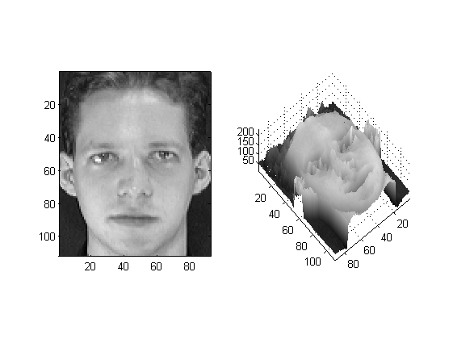
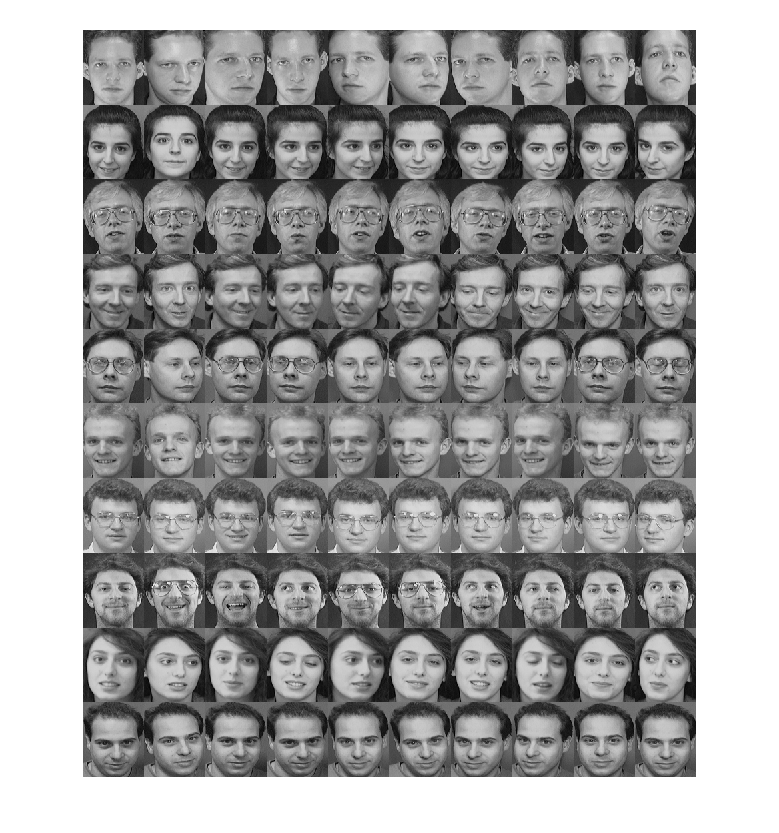
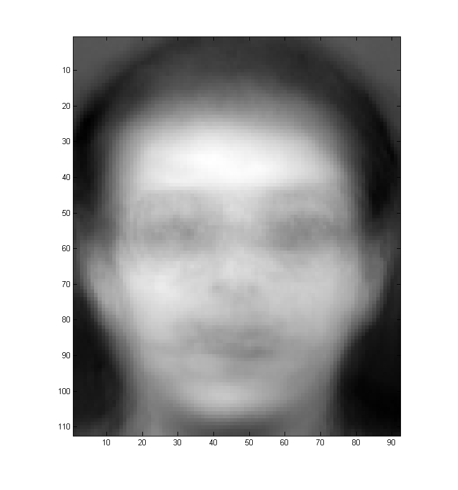
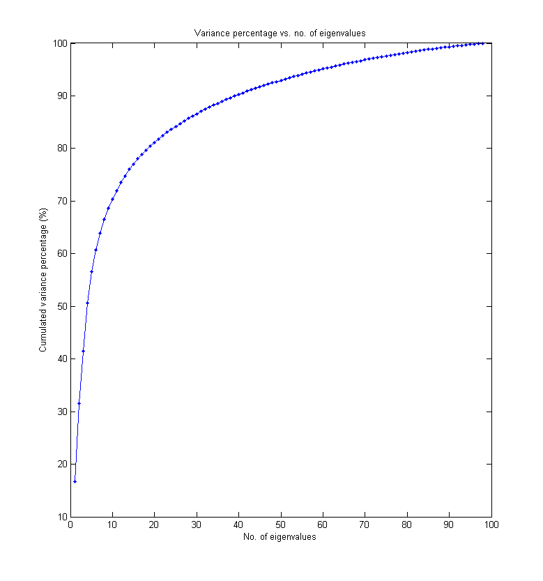
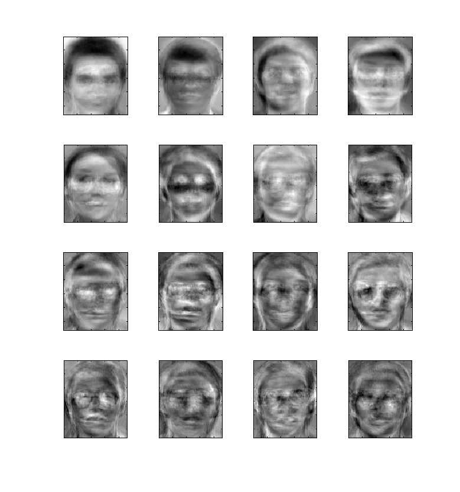
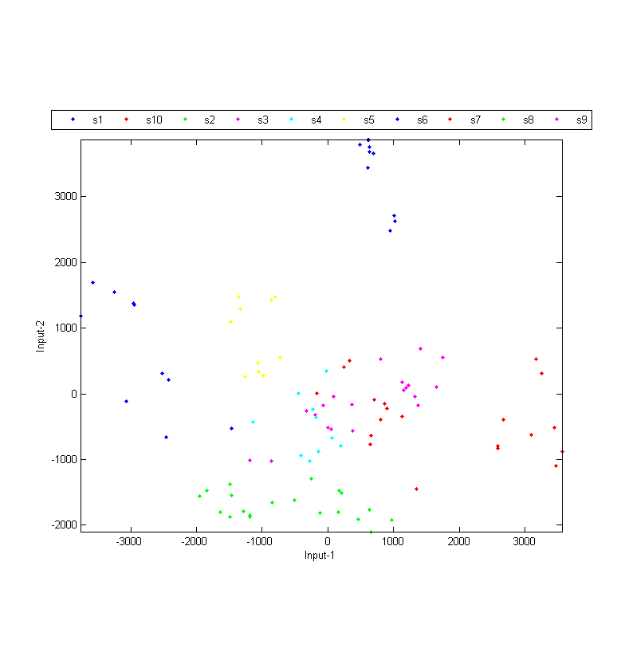
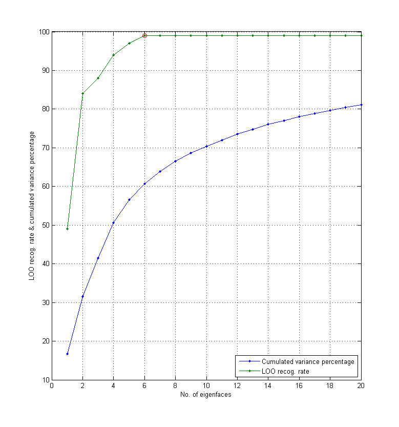
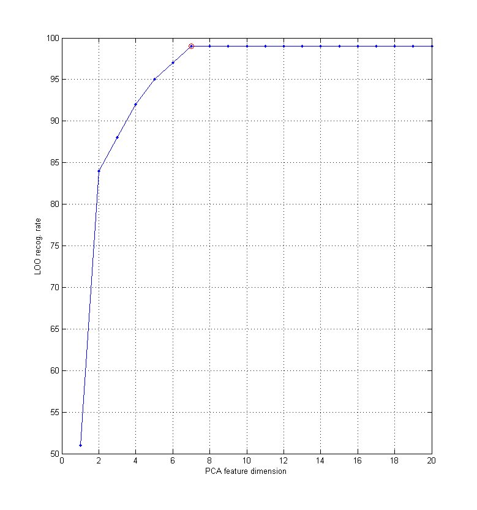
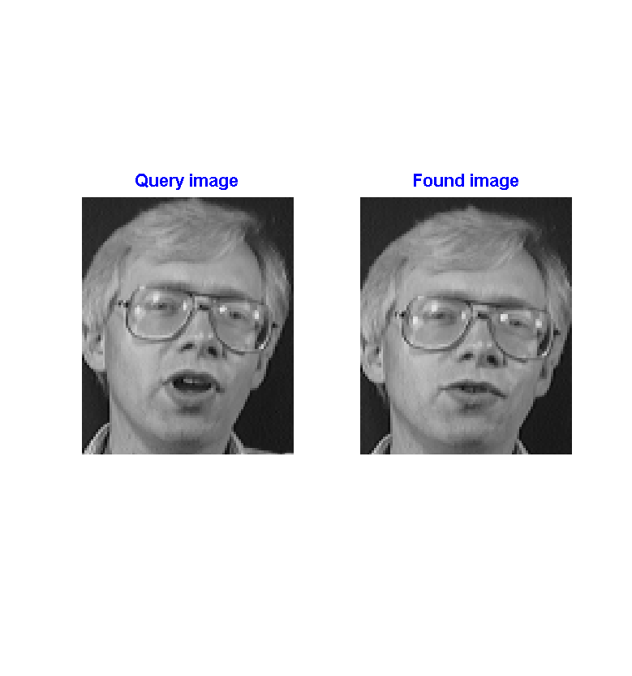

Face Recognition via Eigenfaces (PCA Projection)
In this application example, we shall investigate the use of PCA (principal component analysis) for face recognition. This method uses PCA to reduce the dimensions of face images while keeping the variations among data as much as possible.
Contents
Reading and displaying face images
First of all, we need to read the face dataset that comes with the toolbox. The 10-subjects face dataset is a partial collection of the AT&T face database>, which consists of 40 subjects. (If you want to try the full dataset, download it from the above link.)
First of all, we need to read the face dataset:
imageDir=[mltRoot, '/dataSet/att_faces(partial)']; opt=fileList('defaultOpt'); opt.extName='pgm'; opt.mode='recursive'; faceData=fileList(imageDir, opt); fprintf('Reading %d face images from %s...', length(faceData), imageDir); tic for i=1:length(faceData) faceData(i).image=imread(faceData(i).path); end fprintf(' ===> %.2f sec\n', toc); fprintf('Saving faceData.mat...\n'); save faceData faceData
Reading 100 face images from d:\users\jang\matlab\toolbox\machineLearning/dataSet/att_faces(partial)... ===> 0.17 sec Saving faceData.mat...
The face data is then save as a structure array faceData of size 100 in faceData.mat.
You can display one of the face image as follows:
load faceData.mat subplot(1,2,1); imagesc(faceData(1).image); colormap(gray) axis image; subplot(1,2,2); surf(double(faceData(1).image)); colormap(gray) axis image; shading interp; view(140, 80);
If you want to display face images all the 10 subjects, use "montage":
clf load faceData.mat filePaths={faceData.path}; montage(filePaths, 'Size', [length(filePaths)/10, 10]);
Warning: Image is too big to fit on screen; displaying at 67%
PCA for face recognition
To try PCA on these face images, we need to find the mean face first:
clf load faceData.mat allFaces=double(cat(3, faceData.image)); meanFace=mean(allFaces, 3); imagesc(meanFace); axis image; colormap(gray);
Now we are ready to put all face images (after mean subtraction) into a big matrix A and find eigenvalues and eigenvectors of A*A' for PCA analysis. In particular, we can plot the percentage of total variance versus number of eigenvalues to get an idea as how PCA can "squeeze" the variance into the first few eigenvalues, as follows.
clf load faceData.mat [rowDim, colDim]=size(faceData(1).image); % ====== Compute mean face meanFace=mean(double(cat(3, faceData.image)), 3); % ====== Put all face into a big matrix fprintf('Put all images into a big matrix... '); tic A=[]; for i=1:length(faceData) A(:,i)=double(faceData(i).image(:))-meanFace(:); end fprintf(' ===> %.2f sec\n', toc); % ====== Perform PCA fprintf('Perform PCA... '); tic [A2, eigVec, eigValue]=pca(A); fprintf(' ===> %.2f sec\n', toc); % ====== Plot variance percentage vs. no. of eigenvalues cumVar=cumsum(eigValue); cumVarPercent=cumVar/cumVar(end)*100; plot(cumVarPercent, '.-'); xlabel('No. of eigenvalues'); ylabel('Cumulated variance percentage (%)'); title('Variance percentage vs. no. of eigenvalues'); fprintf('Saving results into eigenFaceResult.mat...\n'); save eigenFaceResult A2 eigVec cumVarPercent rowDim colDim
Put all images into a big matrix... ===> 0.01 sec Perform PCA... ===> 0.03 sec Saving results into eigenFaceResult.mat...
Once we have the eigenvectors of A*A', we can display the first few eigenfaces:
load eigenFaceResult.mat % load A2, eigVec, rowDim, colDim, etc reducedDim=16; % Display the first 16 eigenfaces eigenfaces = reshape(eigVec, rowDim, colDim, size(A2,2)); side=ceil(sqrt(reducedDim)); for i=1:reducedDim subplot(side,side,i); imagesc(eigenfaces(:,:,i)); axis image; colormap(gray); set(gca, 'xticklabel', ''); set(gca, 'yticklabel', ''); end
For purpose of visualization, we can project the original faces into 2D face space:
load faceData.mat load eigenFaceResult.mat % Load A2, eigVec, rowDim, colDim, etc DS.input=A2(1:2,:); DS.outputName=unique({faceData.parentDir}); DS.output=zeros(1, size(DS.input,2)); for i=1:length(DS.output) DS.output(i)=find(strcmp(DS.outputName, faceData(i).parentDir)); DS.annotation{i}=faceData(i).path; end clf; dsScatterPlot(DS); [recogRate, computed, nearestIndex]=knncLoo(DS); fprintf('Recog. rate = %.2f%%\n', 100*recogRate);
Recog. rate = 83.00%
The leave-one-out recognition rate of KNNC over the projected dataset is only 39.00%. This is a bit on the low side since the overall accounted variance of 2 eigenvalues is only about 30.52%.
Performance evaluation via LOO test
To find the best number of eigenvalues, we can perform an exhaustive search:
load faceData.mat load eigenFaceResult.mat % Load A2, eigVec, cumVarPercent, rowDim, colDim % ====== Create DS DS.input=A2; DS.outputName=unique({faceData.parentDir}); DS.output=zeros(1, size(DS.input,2)); for i=1:length(DS.output) DS.output(i)=find(strcmp(DS.outputName, faceData(i).parentDir)); DS.annotation{i}=faceData(i).path; end % ====== RR w.r.t. no. of eigenvectors maxDim=20; rr=pcaPerfViaKnncLoo(DS, maxDim, 1); plot(1:maxDim, cumVarPercent(1:maxDim), '.-', 1:maxDim, rr*100, '.-'); grid on xlabel('No. of eigenfaces'); ylabel('LOO recog. rate & cumulated variance percentage'); [maxValue, maxIndex]=max(rr); line(maxIndex, maxValue*100, 'marker', 'o', 'color', 'r'); legend('Cumulated variance percentage', 'LOO recog. rate', 'location', 'southeast'); fprintf('Optimum number of eigenvectors = %d, with recog. rate = %.2f%%\n', maxIndex, maxValue*100);
LOO recog. rate of KNNC using 1 dim = 49/100 = 49% LOO recog. rate of KNNC using 2 dim = 84/100 = 84% LOO recog. rate of KNNC using 3 dim = 88/100 = 88% LOO recog. rate of KNNC using 4 dim = 94/100 = 94% LOO recog. rate of KNNC using 5 dim = 97/100 = 97% LOO recog. rate of KNNC using 6 dim = 99/100 = 99% LOO recog. rate of KNNC using 7 dim = 99/100 = 99% LOO recog. rate of KNNC using 8 dim = 99/100 = 99% LOO recog. rate of KNNC using 9 dim = 99/100 = 99% LOO recog. rate of KNNC using 10 dim = 99/100 = 99% LOO recog. rate of KNNC using 11 dim = 99/100 = 99% LOO recog. rate of KNNC using 12 dim = 99/100 = 99% LOO recog. rate of KNNC using 13 dim = 99/100 = 99% LOO recog. rate of KNNC using 14 dim = 99/100 = 99% LOO recog. rate of KNNC using 15 dim = 99/100 = 99% LOO recog. rate of KNNC using 16 dim = 99/100 = 99% LOO recog. rate of KNNC using 17 dim = 99/100 = 99% LOO recog. rate of KNNC using 18 dim = 99/100 = 99% LOO recog. rate of KNNC using 19 dim = 99/100 = 99% LOO recog. rate of KNNC using 20 dim = 99/100 = 99% Optimum number of eigenvectors = 6, with recog. rate = 99.00%
Now it is obvious that the best recognition rate is 99.00%, which occurs when the number of used eigenvectors is 6, with a corresponding variance coverage of 60.72%.
However, the best recognition rate obtained above is overly optimistic since we used all faces for PCA prjection when performing LOO test. A more objective way to estimate the recognition rate is to preclude the test data from PCA projection, as shown next. (Be warned that it takes a much longer time to run this example.)
load faceData.mat maxDim=20; % Max dim. after PCA % ====== Create DS fprintf('Creating DS... ===> '); tic DS=faceData2ds(faceData); fprintf('%.2f sec\n', toc); looRecogRate=zeros(1, maxDim); time=zeros(1, maxDim); for i=1:maxDim opt.pcaDim=i; opt.method='pca'; fprintf('%d/%d: opt.pcaDim=%d, ', opt.pcaDim, maxDim, i); [looRecogRate(i), computedClass, correct, timeVec]=faceRecogPerfLoo(DS, opt); time(i)=sum(timeVec); fprintf('rr=%.2f%%\n', looRecogRate(i)*100); end plot(1:maxDim, looRecogRate*100, '.-'); [maxRr, index]=max(looRecogRate); line(index, maxRr*100, 'color', 'r', 'marker', 'o'); fprintf('Max RR=%.2f%% at dim=%d\n', maxRr*100, index); xlabel('PCA feature dimension'); ylabel('LOO recog. rate'); grid on
Creating DS... ===> 0.01 sec 1/20: opt.pcaDim=1, rr=51.00% 2/20: opt.pcaDim=2, rr=84.00% 3/20: opt.pcaDim=3, rr=88.00% 4/20: opt.pcaDim=4, rr=92.00% 5/20: opt.pcaDim=5, rr=95.00% 6/20: opt.pcaDim=6, rr=97.00% 7/20: opt.pcaDim=7, rr=99.00% 8/20: opt.pcaDim=8, rr=99.00% 9/20: opt.pcaDim=9, rr=99.00% 10/20: opt.pcaDim=10, rr=99.00% 11/20: opt.pcaDim=11, rr=99.00% 12/20: opt.pcaDim=12, rr=99.00% 13/20: opt.pcaDim=13, rr=99.00% 14/20: opt.pcaDim=14, rr=99.00% 15/20: opt.pcaDim=15, rr=99.00% 16/20: opt.pcaDim=16, rr=99.00% 17/20: opt.pcaDim=17, rr=99.00% 18/20: opt.pcaDim=18, rr=99.00% 19/20: opt.pcaDim=19, rr=99.00% 20/20: opt.pcaDim=20, rr=99.00% Max RR=99.00% at dim=7
From the above example, the more objective recognition rate is 99.00%, which occurs when the dimension for PCA projection is 7.
Demo
Example demo for face recognition using PCA is shown next:
load faceData.mat frOpt.method='pca'; frOpt.pcaDim=7; frOpt.plot=1; faceRecogDemo(faceData, frOpt);
Method=pca Time=0.14 sec
References
- M. Kirby and L. Sirovich, "Application of the Karhunen-Loeve Procedure for the Characterization of Human Faces". IEEE Transactions on Pattern Analysis and Machine Intelligence 12 (1): 103–108, 1990.
- M.A. Turk and A.P. Pentland, "Face Recognition Using Eigenfaces", IEEE Conf. on Computer Vision and Pattern Recognition, pp. 586-591, 1991.
Copyright 2011-2012 Jyh-Shing Roger Jang.